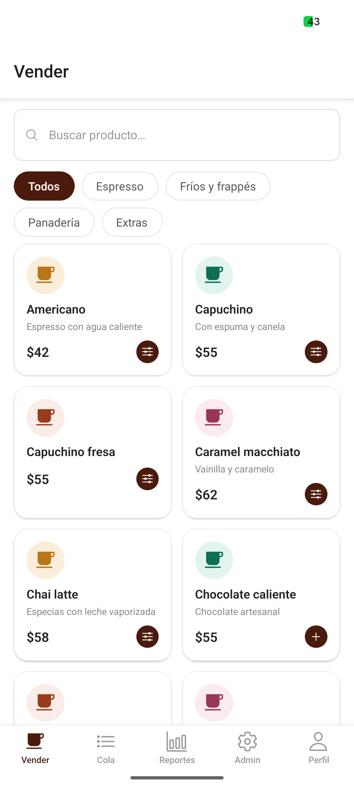
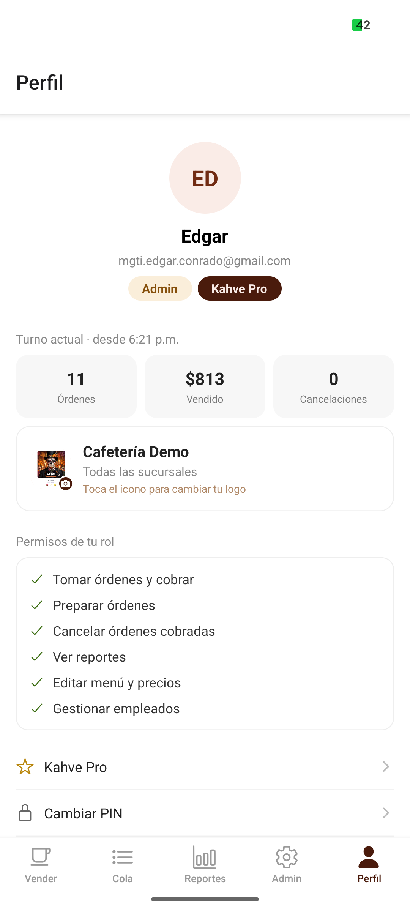
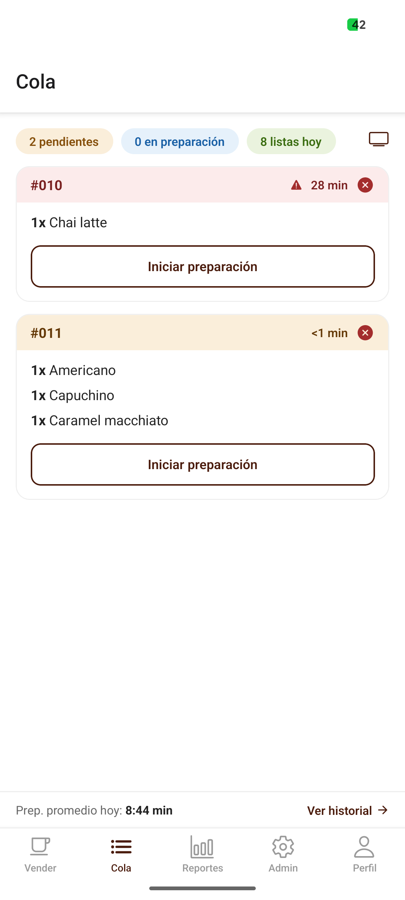
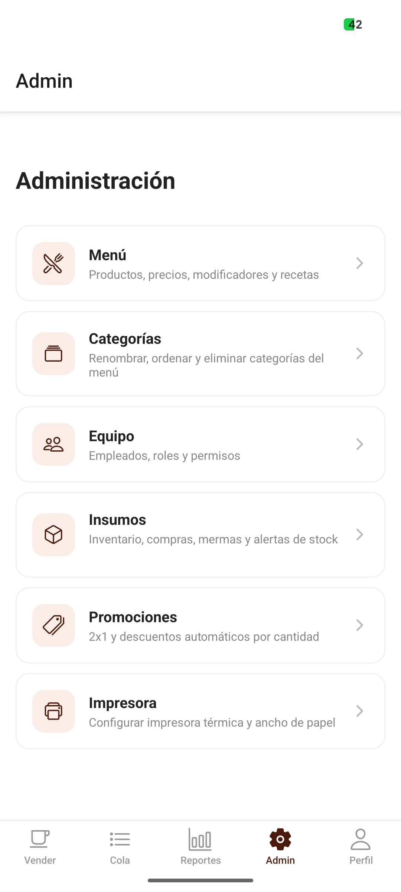

KahvePunto de venta para cafeterías
Manual de usuario
Guía práctica para administrar el menú, vender, preparar órdenes, cobrar, controlar turnos y consultar resultados.
Guía práctica para administrar el menú, vender, preparar órdenes, cobrar, controlar turnos y consultar resultados.
1. Conceptos básicos
2. Registro e inicio de sesión
3. Roles y permisos
4. Abrir un turno
5. Vender
6. Cobrar
7. Cola de preparación
8. Cerrar turno
9. Reportes
10. Administración
11. Menú y categorías
12. Equipo
13. Insumos
14. Promociones
15. Clientes frecuentes
16. Impresora y tickets
17. Tablero de órdenes
18. Perfil y seguridad
19. Kahve Pro
20. Solución de problemas
Kahve organiza el trabajo de la cafetería en cinco áreas principales: Vender, Cola, Reportes, Admin y Perfil. La barra inferior muestra únicamente las áreas permitidas para el rol de la persona que inició sesión.
Para crear una cafetería nueva, usa Registra tu cafetería e introduce nombre de la cafetería, sucursal, nombre del administrador, correo, PIN y confirmación.
| Rol | Uso principal | Acceso habitual |
|---|---|---|
| Barista | Preparar pedidos | Cola y estados de órdenes |
| Cajero | Registrar ventas | Vender, cobrar, turnos y cola |
| Supervisor | Supervisar operación | Ventas, cancelaciones y reportes |
| Administrador | Configurar la cafetería | Todos los módulos, equipo y catálogo |
Solo puede haber un turno operativo por caja o sucursal según la configuración. El sistema asocia las ventas, pagos y movimientos al turno abierto.

Pantalla de venta con categorías, productos y ticket activo.
La pantalla de cobro resume productos, modificadores, descuentos, IVA y total. También permite identificar al cliente y elegir si la orden es para llevar o consumir en el local.

Los cajeros pueden aplicar descuento manual hasta el límite autorizado; supervisores y administradores tienen mayor capacidad. La propina puede ser 5%, 10%, 15% o un monto personalizado.
La cola recibe órdenes en tiempo real. Un sonido y vibración avisan cuando entra una nueva orden.

Cola con métricas de pendientes, preparación y órdenes listas.
| Estado | Acción |
|---|---|
| Pagada | Pulsa Iniciar para comenzar la preparación. |
| En preparación | Revisa productos, modificadores y notas; después pulsa Marcar lista. |
| Lista | Desde Historial puede marcarse como entregada. |
| Cancelada | Solo un rol autorizado puede cancelar e indicar el motivo. |
Las órdenes con demasiado tiempo se resaltan para priorizarlas. Historial muestra las órdenes terminadas y canceladas del día.
Disponible para supervisor y administrador. Resume ventas, órdenes, ticket promedio, tiempo de preparación, consumo local/para llevar y métodos de pago.
| Periodo | Visualización |
|---|---|
| Hoy | Ventas por hora. |
| Semana / Mes | Ventas por día. |
| Año | Ventas por mes. |

Accesos a Menú, Categorías, Equipo, Insumos, Promociones e Impresora.
El interruptor Disponible/Agotado controla si el producto se puede vender sin eliminar su historial.
No puedes editar tu propia sesión desde la lista. En el plan gratuito existe un límite de empleados activos.
Administra existencias, compras, mermas y unidades utilizadas en recetas.
Kahve admite tres tipos:
Selecciona producto o categoría, configura condiciones, revisa el nombre y activa la promoción. Las promociones activas se aplican automáticamente al cobrar.
En el cobro, el teléfono es voluntario. Informa al cliente sobre su uso conforme al Aviso de Privacidad.
La búsqueda Bluetooth está disponible en Android. La impresora debe emparejarse primero desde Ajustes del sistema.
Configuración de impresora, papel y contenido del ticket.
Comprueba que el ancho de papel seleccionado coincida con el rollo. Kahve utiliza el área imprimible real para centrar el logotipo.
Desde Cola, el botón Tablero abre una vista para clientes con las órdenes listas y las que siguen en preparación. Está diseñada para una pantalla visible desde la barra.
Perfil, organización, plan, permisos y estadísticas del turno. El correo se ocultó en este manual.
| Función | Free | Pro / Prueba |
|---|---|---|
| Empleados | Hasta 3 activos | Ilimitados |
| Reportes | Hoy | Semana, mes, año y exportación |
| Fotos y recetas | No | Sí |
| Insumos y mermas | No | Sí |
| Promociones y lealtad | No | Sí |
| Tablero y envío de tickets | No | Sí |
El administrador puede consultar el plan desde Perfil → Kahve Pro. Las opciones de contratación pueden variar según plataforma y tipo de compilación.
| Problema | Qué revisar |
|---|---|
| No puedo vender | Abre un turno y confirma que tu rol tenga permiso de venta. |
| No aparece un producto | Revisa categoría, búsqueda y estado Disponible/Agotado. |
| No llega una orden a Cola | Comprueba internet; espera reconexión y verifica que el cobro terminó. |
| No imprime | Bluetooth, emparejamiento, permisos, impresora seleccionada y ancho del papel. |
| No puedo cancelar | La cancelación requiere rol supervisor o administrador. |
| No veo Semana/Mes/Año | Los periodos extendidos requieren Kahve Pro. |
| Diferencia en caja | Revisa fondo, efectivo, propinas, retiros, depósitos y conteo. |